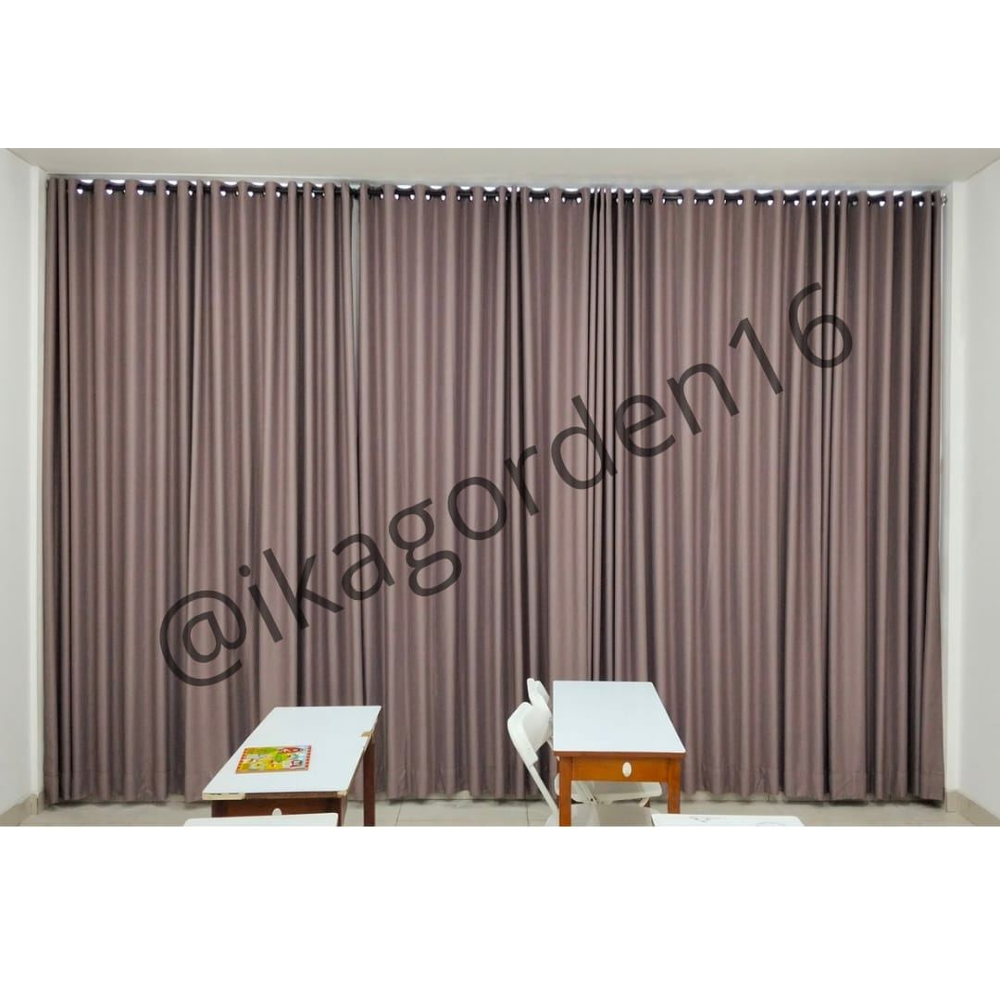
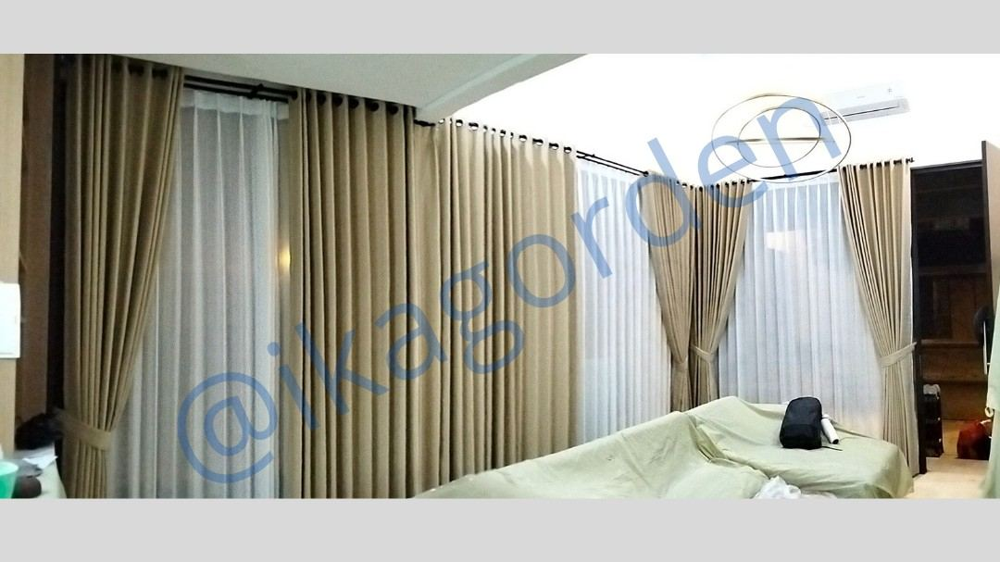
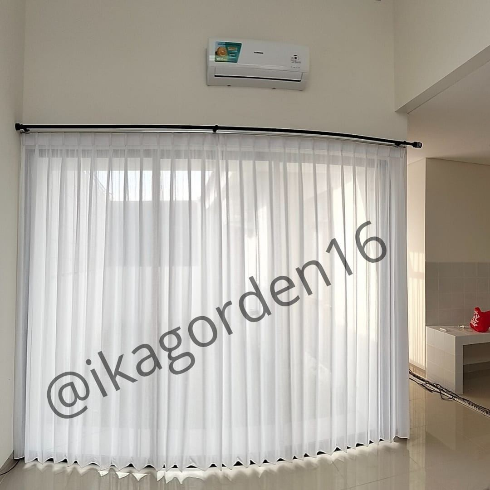
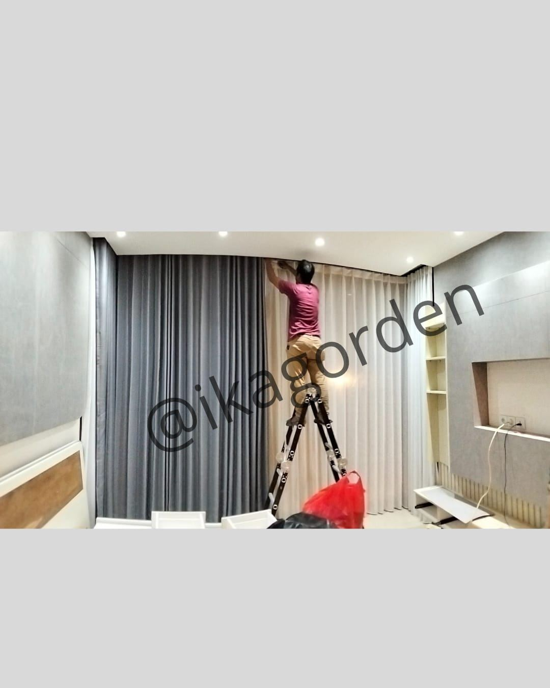
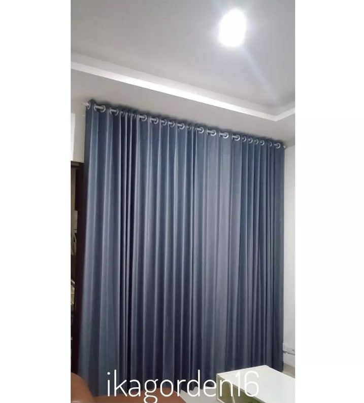
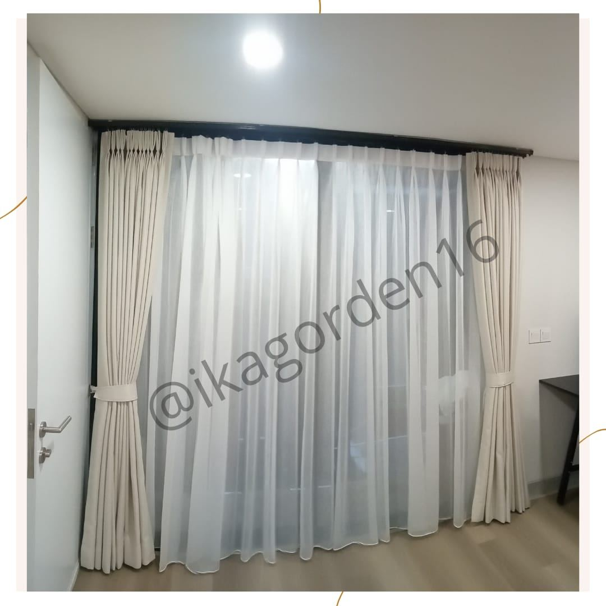
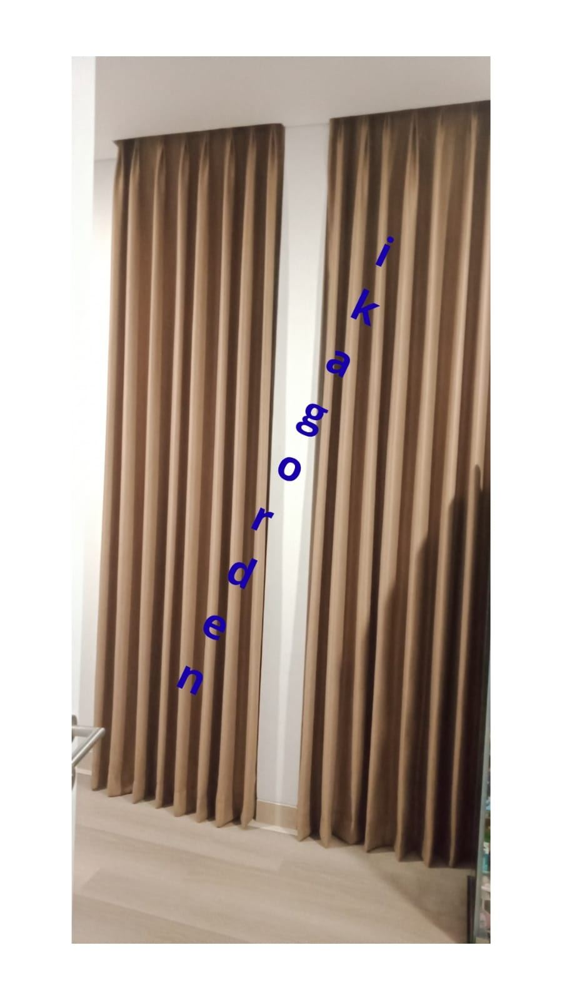
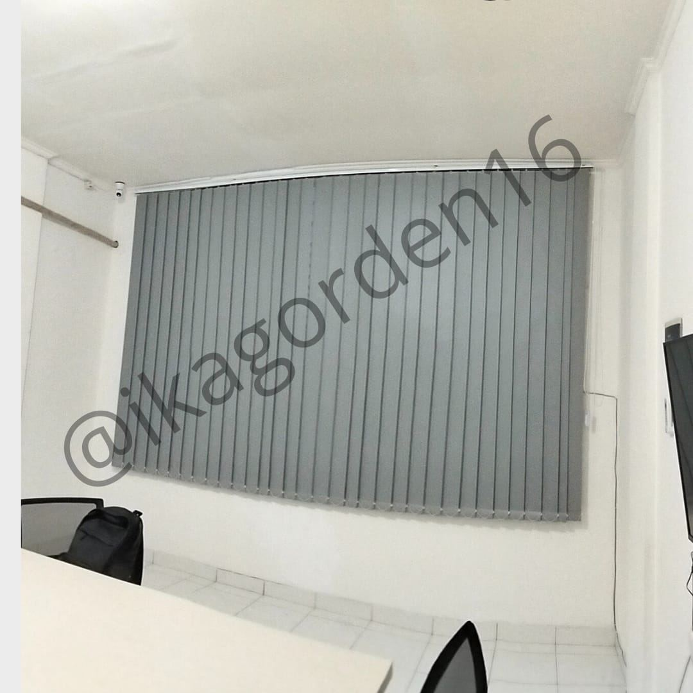
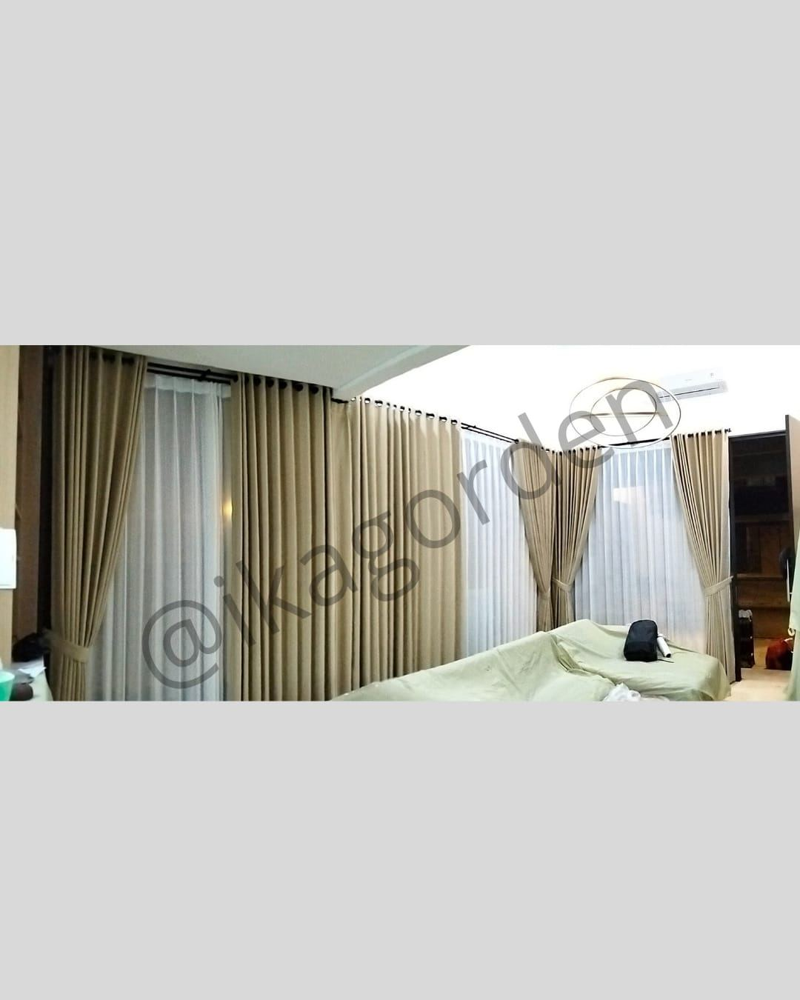

Spesialis pemasangan gorden berkualitas tinggi untuk rumah, kantor, hotel, klinik, sekolah, dan universitas. Konsultasi, pengukuran, dan pemasangan langsung ke lokasi Anda.




IKA Gorden hadir sebagai solusi terpercaya kebutuhan gorden dan tirai premium di area BSD, Gading Serpong, dan sekitarnya. Kami menawarkan layanan lengkap mulai dari konsultasi desain, pengukuran di tempat, produksi kustom, hingga pemasangan profesional.
Setiap gorden yang kami pasang dirancang untuk memperindah ruangan sekaligus memenuhi kebutuhan fungsional – baik cahaya, privasi, maupun estetika.
Tim kami datang langsung ke lokasi Anda
Disesuaikan ukuran & selera Anda
Teknisi berpengalaman & bergaransi
Jaminan kualitas & after-sales service
Tersedia berbagai jenis gorden dan tirai premium untuk setiap kebutuhan ruang Anda.
Pilihan elegan dengan bahan berkualitas tinggi, cocok untuk berbagai gaya interior. Tersedia dalam ratusan pilihan motif dan warna untuk mempercantik ruangan Anda.
Eyelet · Pinch Pleat · Tab TopMemblokir cahaya hingga 100% – sempurna untuk kamar tidur, bioskop mini, dan ruang presentasi. Juga membantu menjaga suhu ruangan lebih efisien.
100% Light Block · Hemat EnergiDesain modern minimalis dengan mekanisme roll yang halus dan tahan lama. Ideal untuk kantor, apartemen, dan ruang dengan estetika kontemporer.
Manual · MotorizedTampilan mewah dan tekstural dengan lipatan horizontal yang indah. Menciptakan kesan hangat dan elegan yang cocok untuk ruang tamu dan kamar tidur.
Flat · Relaxed · HobbledPilihan terbaik untuk jendela besar dan pintu kaca geser. Kontrol cahaya sempurna untuk kantor, hotel, dan ruang komersial dengan tampilan profesional.
Office Grade · CommercialKlasik dan fungsional, tersedia dalam material aluminium, kayu asli, dan faux wood. Ideal untuk rumah, kantor, dan berbagai ruang komersial.
Aluminium · Wood · Faux WoodKarya kami berbicara sendiri – ratusan ruang telah bertransformasi dengan sentuhan IKA Gorden.




Kami siap datang ke lokasi Anda untuk konsultasi, pengukuran, dan pemasangan profesional di seluruh wilayah Tangerang Selatan dan sekitarnya.
Cluster, townhouse, perumahan, vila
Kantor, co-working space, showroom
Hotel bintang, resort, guesthouse
Gorden antibacterial khusus medis
Ruang kelas, aula, laboratorium

Kami menyediakan gorden khusus dengan lapisan antibacterial yang aman untuk lingkungan medis. Memenuhi standar higienitas tinggi untuk klinik, rumah sakit, laboratorium, dan fasilitas kesehatan lainnya.
⭐⭐⭐⭐⭐ Semua ulasan nyata dari Google Business Profile kami
"Cantik banget gordennya, jahitan rapih. Ownernya juga baik banget. Thx bu Ika!"
"Sangat memuaskan pesan gorden di Ika Gorden, sudah harga terjangkau, pesanan rapih, penjual ramah dan sangat komunikatif. Sangat suka dengan hasilnya, terima kasih seller!"
"Puas bgt sama hasilnya, warnanya sesuai dengan request, pemasangan rapih dan bagusss bgtt ⭐ Terimakasih Ika Gorden!"
"Bagusss banget, pengerjaannya cepet dan telaten, hasilnya memuaskan, bisa konsultasi dan disesuaikan sama budget, ramah diajak diskusi enak, fast respon!"
"Terima kasih IKA Gorden, ruang kelas menjadi lebih terlihat rapih dan adem. Owner gercep dan pesanan selesai dalam 3–4 hari!"
"Bagus orangnya tanggung jawab dan ok, rekomendasi sekali! Horass 🙏"
"Gordennya standard dengan kualitas oke & mewah, harganya pun terjangkau, pemasangan rapi. Terima kasih banyak!"
"Ga nyesel pasang gorden di Ika Gorden krn hasilnya sebagus itu 😍 Rapi dan sangat memuaskan. Harga bersahabat banget!"
"Pesanan cepat jadi, kualitas memuaskan, harga sesuai, owner sangat sabar dalam membantu memberi saran dan mampu membaca kebutuhan pelanggan."
"Gordennya bagus, harga terjangkau, dan owner-nya ramah sekali. Yang mau pasang gorden di daerah sekitar Maja, Cikupa dan sekitarnya, highly recommended!"
"Keren hasilnya, jadi kelihatan seperti rumah beneran! Harga juga terjangkau. Sangat puas dengan pelayanan dan hasil pemasangannya."
"Terima kasih kak, kualitas ok, sat set juga. Sukses selalu!"
Jangan ragu untuk berkonsultasi! Tim kami siap membantu Anda memilih gorden yang tepat sesuai kebutuhan dan anggaran. Konsultasi gratis, survei gratis!
Chat Sekarang – 0895-3261-6326